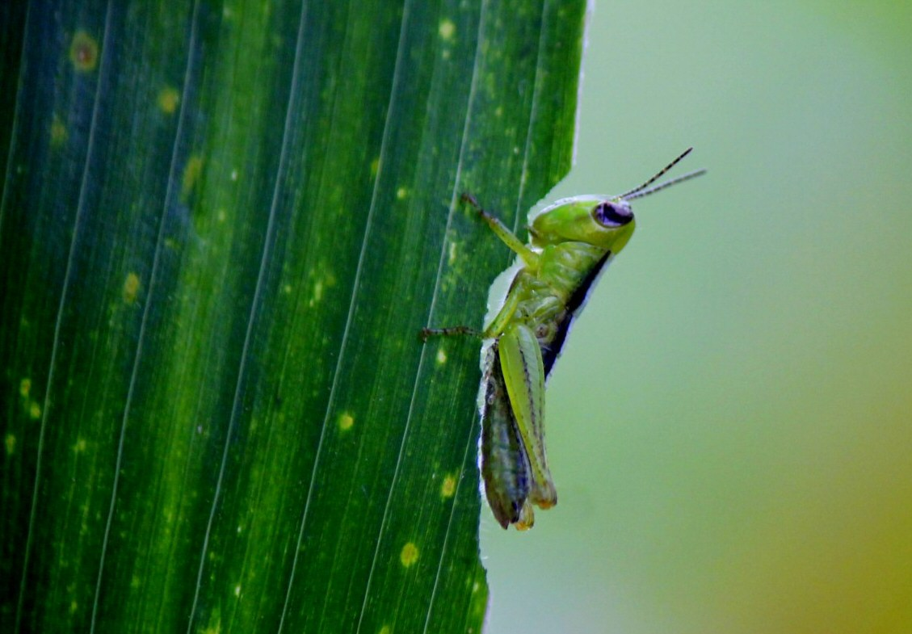

生态系统的能量流动（上）：过程和特点
本期导读
生态系统的能量流动（上）

视频原话 · 导读3 句
- 同学们好！这节课梳理人教版选择性必修二第三章第二节——生态系统的能量流动，上集讲过程和特点。10.3s
- 高考常考摄入量、同化量和粪便量的关系、能量去向的分析，以及单向流动、逐级递减的原因。9.3s
- 我们按七个考点梳理，每个考点都讲清楚怎么考、怎么做。5.6s
能量流动的概念01#
能量流动：生态系统中能量的输入、传递、转化和散失的过程
输入
生产者固定的太阳能总量
（人工生态系统 + 人工输入的有机物）
（人工生态系统 + 人工输入的有机物）
传递
沿食物链、食物网
以有机物中的化学能形式
以有机物中的化学能形式
转化
太阳能 → 化学能 → 热能
散失
以热能形式
通过呼吸作用散失
通过呼吸作用散失
易错
总能量是生产者固定的太阳能，不是照射到生产者上的太阳能，也不是生产者积累的能量
视频原话5 句
- 考点一，能量流动的概念。生态系统中能量的输入、传递、转化和散失的过程，叫做能量流动。9.9s
- 输入：流经生态系统的总能量，是生产者固定的太阳能总量；人工生态系统还要加上人工输入的有机物中的能量。10.7s
- 传递：沿着食物链和食物网，以有机物中的化学能形式传递。6.0s
- 转化：太阳能、化学能、热能；散失：最终以热能形式，通过呼吸作用散失。8.3s
- 易错：总能量是生产者固定的太阳能，不是照射到生产者上的太阳能，也不是生产者积累的能量。9.0s
流经第一营养级02#
解题方法
每个营养级都拆成：固定或同化 → 呼吸散失 + 用于生长、发育和繁殖
视频原话5 句
- 考点二，能量流经第一营养级。生产者通过光合作用，把太阳能固定在有机物中。8.3s
- 这些能量，一部分在生产者的呼吸作用中以热能的形式散失。6.0s
- 另一部分用于生产者的生长、发育和繁殖，储存在植物体的有机物中。6.6s
- 这部分能量中，一部分随残枝败叶流向{分解者|brown}，一部分被初级消费者摄入，流入第二营养级。8.9s
- 考法：给出能量流动图，让你填写各个箭头的含义。解题方法：每个营养级都按“固定或同化 → 呼吸散失 + 生长发育繁殖”拆开。14.3s
流经第二营养级03#
摄入量 = 同化量 + 粪便量
易错
粪便中的能量不属于本营养级的同化量，属于上一营养级同化的能量
视频原话4 句
- 考点三，能量流经第二营养级。初级消费者吃进去的能量叫摄入量。7.1s
- 摄入量 = 同化量 + 粪便量。粪便中的能量没有被消化吸收，最终流向分解者。8.3s
- 同化量才是真正流入第二营养级的能量，它又分为呼吸作用散失和用于生长、发育和繁殖两部分。9.3s
- 易错：初级消费者粪便中的能量，不属于初级消费者的同化量，而是属于上一营养级，也就是生产者同化的能量。10.7s
同化量的去向04#
- 某营养级同化量
- 呼吸作用散失热能
- 用于生长、发育和繁殖
- 流入下一营养级
- 流向分解者
- 未利用
一定时间内，同化量的四个去向：
呼吸散失
流入下一营养级
流向分解者
未利用
呼吸散失
流入下一营养级
流向分解者
未利用
易错
最高营养级没有“流入下一营养级”；“未利用”只在定时分析时出现
视频原话5 句
- 考点四，同化量的去向。把每个营养级的能量拆开来看。5.9s
- 同化量 = 呼吸作用散失 + 用于生长、发育和繁殖。6.8s
- 用于生长、发育和繁殖 = 流入下一营养级 + 流向分解者 + 未利用。8.7s
- 所以，一定时间内，同化量的去向有四个：呼吸散失、流入下一营养级、流向分解者、未利用。9.5s
- 易错：最高营养级没有“流入下一营养级”这一项；“未利用”是指暂时没有被利用的能量，只在定时分析时出现。10.1s
赛达伯格湖05#
林德曼的定量研究 单位：J/(cm2·a)
解题方法
传递效率 = 下一营养级同化量 ÷ 上一营养级同化量；分子分母都用同化量，不用摄入量
视频原话4 句
- 考点五，赛达伯格湖的能量流动定量分析，这是美国生态学家林德曼的经典研究。7.9s
- 生产者固定 464.6，植食性动物同化 62.8，肉食性动物同化 12.6，单位是焦每平方厘米每年。11.0s
- 传递效率：62.8 ÷ 464.6 ≈ 13.5%；12.6 ÷ 62.8 ≈ 20%。10.6s
- 解题方法：传递效率 = 下一营养级同化量 ÷ 上一营养级同化量；分子分母都必须是同化量，不能用摄入量。10.7s
单向流动逐级递减06#
单向流动
只能由低营养级流向高营养级，不可逆转，不能循环
原因：捕食关系是自然选择的结果，不可逆转；散失的热能不能再利用
逐级递减
相邻两个营养级之间的传递效率约 10%～20%
原因：每个营养级都有呼吸散失，一部分流向分解者，一部分未被利用
易错
传递效率是相邻两个营养级之间的，不是两个个体之间的：一只狼吃一只兔，可能获得兔的大部分能量
视频原话5 句
- 考点六，能量流动的特点。第一，单向流动：只能沿食物链由低营养级流向高营养级，不可逆转，也不能循环流动。11.6s
- 原因：捕食关系是长期自然选择的结果，不可逆转；散失的热能不能再被生物利用。8.4s
- 第二，逐级递减：相邻两个营养级之间的传递效率大约是10%到20%。7.8s
- 原因：每个营养级都有能量在呼吸作用中散失，还有一部分流向分解者，一部分未被利用。8.6s
- 易错：传递效率是相邻两个营养级之间的，不是两个个体之间的；一只狼吃一只兔，可能获得兔的大部分能量。10.2s
生态金字塔07#
把各营养级的数值由低到高绘成图
考法
通常不会倒置的是能量金字塔；数量金字塔、生物量金字塔都可能倒置
视频原话5 句
- 考点七，生态金字塔。把各营养级的数值，由低到高绘制成图，就是生态金字塔。8.4s
- 能量金字塔：由于能量逐级递减，通常都是上窄下宽的正金字塔。6.5s
- 数量金字塔：可能倒置，比如一棵树上生活着成千上万只昆虫。6.3s
- 生物量金字塔：一般是正的，但在海洋中，某一时刻浮游植物的生物量可能低于浮游动物，出现倒置。9.5s
- 考法：问哪种金字塔通常不会倒置——能量金字塔。数量和生物量金字塔都可能倒置。8.7s
易错速查✓
先自己判断，再点按钮查看对错与解析。
- 1总能量是照射到生产者上的太阳能说法错误：是生产者固定的太阳能总量
- 2初级消费者粪便中的能量属于它的同化量说法错误：属于上一营养级的同化量
- 3同化量 = 呼吸散失 + 生长发育繁殖说法正确。
- 4传递效率指相邻两个个体之间的效率说法错误：指相邻两个营养级之间
- 5能量金字塔通常不会倒置说法正确。
- 6能量可以在生态系统中循环利用说法错误：能量单向流动，不能循环
摄入减粪便是同化，粪便算上一级！
视频原话 · 易错速查5 句
- 最后，用六道判断题检验一下。3.6s
- 判断一：总能量是照到生产者上的太阳能？错，是生产者固定的太阳能总量。判断二：初级消费者粪便中的能量属于它的同化量？错，属于上一营养级。15.7s
- 判断三：同化量等于呼吸散失加用于生长发育和繁殖？对。判断四：传递效率指相邻两个个体之间？错，指相邻两个营养级。13.8s
- 判断五：能量金字塔通常不会倒置？对。判断六：能量可以循环利用？错，能量单向流动。10.4s
- 七个考点串成一条线：摄入减粪便是同化，粪便算上一级。下集讲能量流动的计算和实践意义，我们下期再见！10.8s
图片来源
图片来源：Wikimedia Commons —— Shree Krishna Dhital《Grasshopper eating the maize leaf》CC BY-SA 3.0
Photo: Shree Krishna Dhital, CC BY-SA 3.0